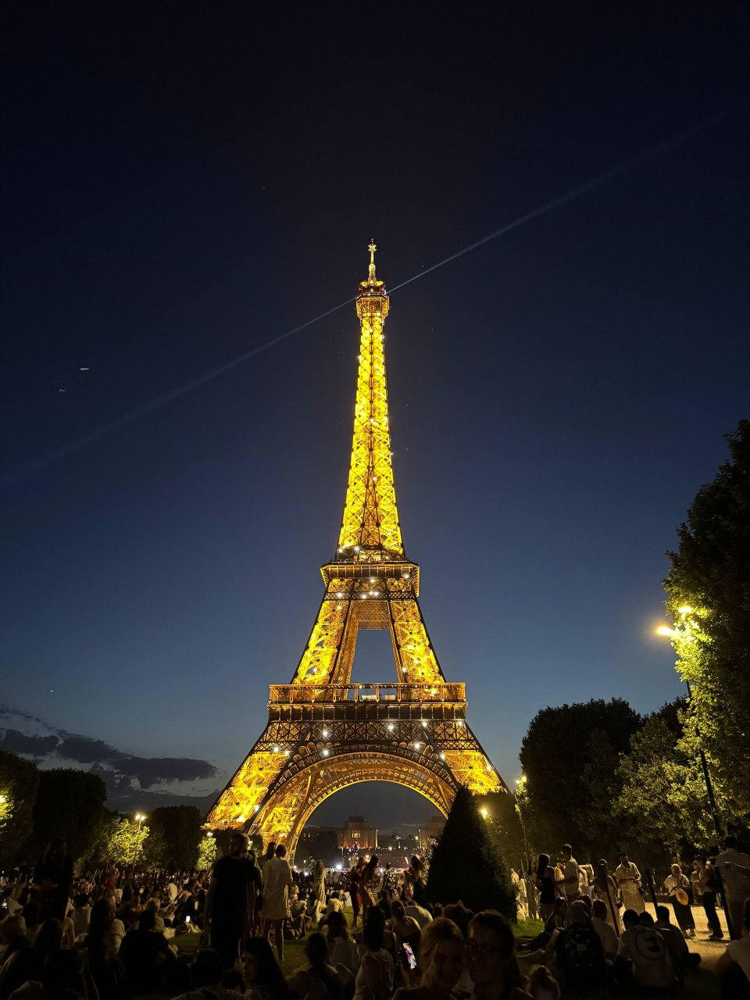
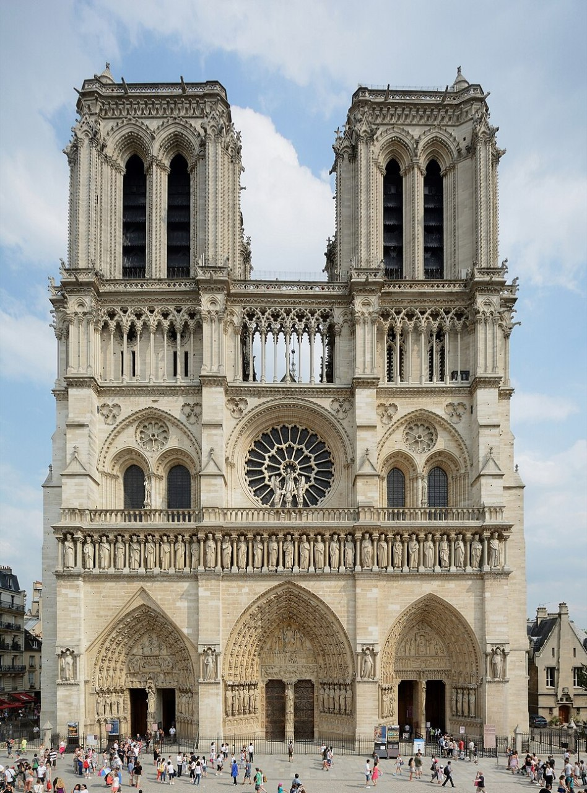
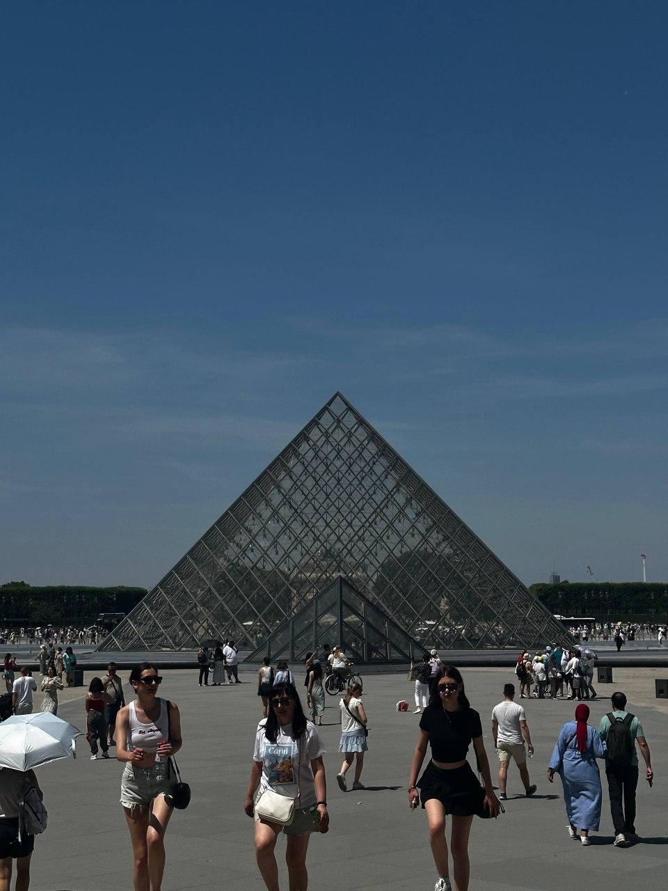
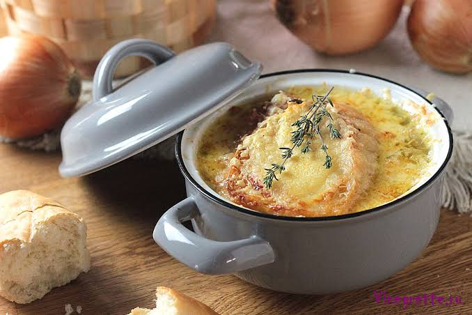
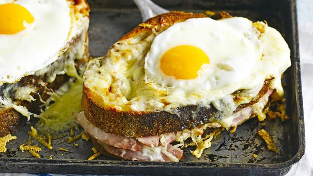
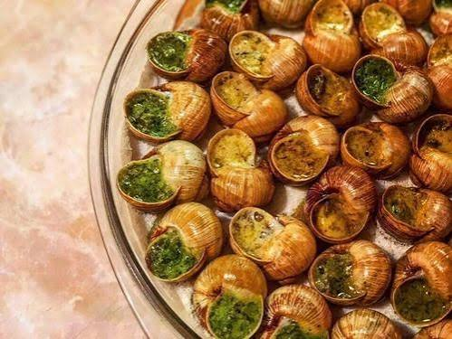
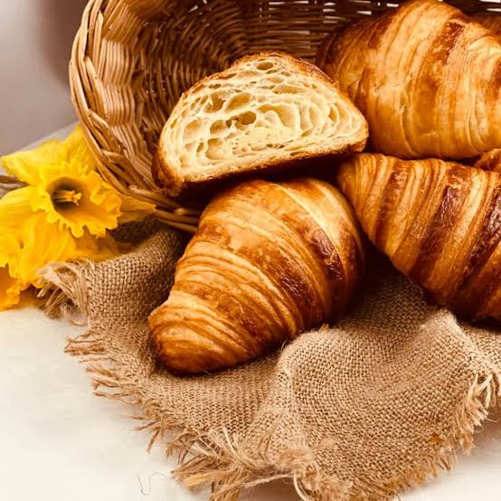
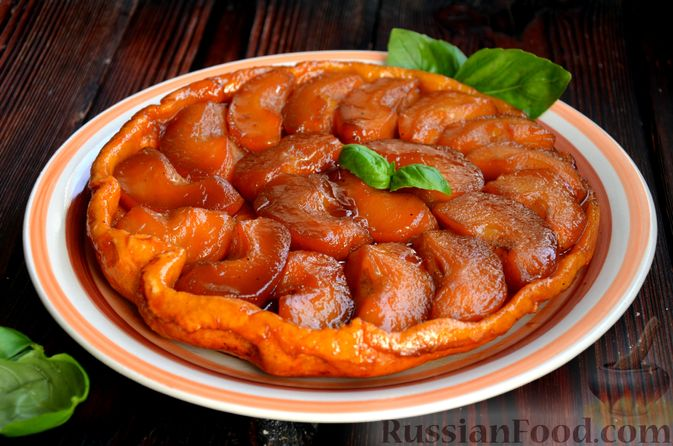
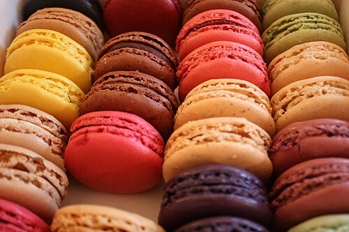

Визначні пам'ятки
Ейфелева вежа

Е́йфелева ве́жа (фр. la Tour Eiffel) — архітектурна пам'ятка Парижа, розміщена на Марсовому полі, символ сучасної Франції. Вежу названо на честь її конструктора — Гюстава Ейфеля. Популярний туристичний об'єкт, який щорічно приймає мільйони відвідувачів.
Собор Паризької Богоматері (Нотр-Дам де Парі)

Собо́р Пари́зької Богома́тері (Нотр-Дам-де-Парі) — собор у Парижі, присвячений Діві Марії, кафедральний храм Паризької архідіоцезії. Один з найпрекрасніших витворів готичного мистецтва, що стоїть на острові Сіте.
Музей Лувр

Музе́й Лу́вр (фр. Musée du Louvre) — один з найбільших музеїв світу і перший за кількістю відвідувачів, розташований на правому березі Сени. Демонструє понад 300 000 експонатів від найдавніших часів до XIX століття.
Кухня та гастрономія
Париж заслужено вважають гастрономічною столицею світу. Французька кухня внесена до списку Нематеріальної культурної спадщини ЮНЕСКО, а культура кафе є важливою частиною повсякденного життя парижан.
Цибулевий суп (Soupe à l'oignon)

Цибулевий суп — карамелізована цибуля у насиченому м'ясному бульйоні, що подається із запеченою скоринкою з грінок та сиру Ґрюєр.
Крок-месьє та Крок-мадам

Традиційний гарячий сендвіч із шинкою та сиром (у версії «мадам» зверху додають смажене яйце).
Ескарго (Escargots de Bourgogne)

Запечені равлики у мушлях із пастою з вершкового масла, часнику та петрушки.
Круасани та Бріоші

Символ французького сніданку. Справжній паризький круасан вирізняється вираженим вершковим смаком і листковою текстурою.
Еклери та Тарт Татен

Еклери та Тарт Татен — класичний яблучний пиріг «навиворіт», де яблука карамелізуються до випікання.
Макарон (Macarons)

Витончене мигдалеве печиво з різноманітними начинками (найвідомішими кондитерськими вважаються Ladurée та Pierre Hermé).
Культура та традиції
Париж — це світовий центр мистецтва, моди та унікального стилю життя, де кожна вулиця дихає історією та культурою. Культурне обличчя міста сформоване навколо його знаменитих архітектурних пам'яток та музеїв.
Особисті враження
Перше відчуття — це захоплення від масштабу та архітектурної гармонії. Коли ви вперше виходите до Сени або опиняєтеся біля Лувра, місто вражає своєю цілісністю, величчю та вечірньою ілюмінацією.